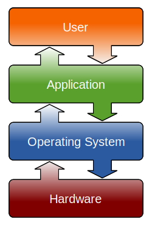

Hardware and Software
Manages computer hardware and software resources
Provides common services for computer programs

Linux distribution
an operating system made as a software collection based on the Linux kernel
More than 600 distros, Any one could make